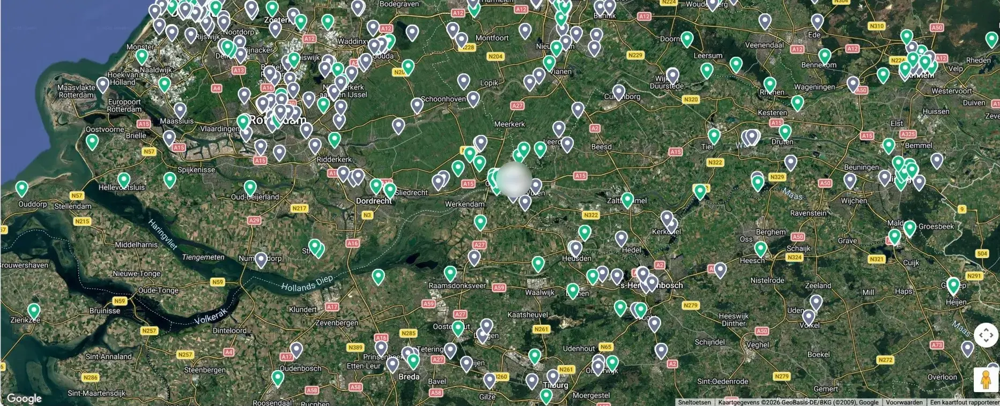

Dringend werk bovenaan. Spoed en storingen springen er op het dashboard meteen uit.
Eén opdracht, vier mensen, nul keer overtypen.
En daaromheen regelt Flow 8 de rest van je bedrijf.
Alles op één centrale plek.
Veel installatie- en servicebedrijven regelen hun planning met een eigen mix van systemen, spreadsheets en losse lijstjes. Overal net iets anders, nergens centraal. Flow 8 brengt het samen, en bespaart zo tijd én geld.
Installatiebedrijven. Kantoor en veld in één omgeving, met dezelfde gegevens aan beide kanten.
Serviceklanten. Vaste klanten en terugkerend onderhoud bij elkaar, inclusief contract en historie.
Machines en installaties. Gekoppeld aan de klant, klaar voor onderhoud of reparatie. Bekijk het register
895opdrachten in 2026 in één omgeving
2weken van intake tot live
3maanden gratis meedraaien
€ 9per gebruiker per maand
Begin de dag met overzicht.
Opdrachten, agenda, afwezigheid en dringende werkorders, alles in één oogopslag. En vanuit het dashboard ben je met één klik in de module die je nodig hebt.
- Slimme dagplanning: minste kilometers en reistijd
- Wie heeft storingsdienst, wie is er afwezig
- Dringende werkorders bovenaan
Dashboard
Dinsdag 4 november
11opdrachten vandaag
2afwezig
6,5 uoveruren deze week
4werkorders open
Opdrachten vandaag
DVDaan Visser2 opdrachten
08:30Servicebeurt · HoutenKlaargezet
11:15Installatie · NieuwegeinIngepland
SBSem Bakker2 opdrachten
08:00Installatie · UtrechtAfgerond
09:15Servicebeurt · IJsselsteinOnderweg
Agenda
weekStoringsdienst · Lotte Smit
Afwezig vandaag
Mark JansenVerlof
Eva de BoerZiek
Werkorders
3Reparatie
1Assemblage
Planning en route. Week, maand of dag per monteur, met route-optimalisatie.
Werkbonnen. Op de telefoon, met checklist, foto’s en handtekening.
Week46Storingsdienst · Lotte SmitZie wie er dienst heeft, deze week en de volgende.
Kaartoverzicht. Alle klanten en opdrachten op de kaart, gekleurd naar status.
Werkorders. Reparaties in de werkplaats, met eigen stappen per soort.
Klantmails. Afspraken bevestigen met eigen sjablonen, alles in het maillog.
Register en materialen. Machines, installaties en artikelen, gekoppeld aan de klant.
Rapportage. Opdrachten per monteur, per soort en per maand.
Je hele klantenbestand op één kaart.
Elke serviceklant op zijn eigen plek, gekleurd naar status. Zo zie je in één oogopslag waar werk ligt, en welke monteur er het dichtste bij zit.

895opdrachten gepland in 2026
KlaargezetMee bezigActie vereistAfgehandeld
Je klanten overzichtelijk bij elkaar.
Van debiteuren tot vaste serviceklanten: contactgegevens, contracten en gekoppelde installaties op één plek, zodat je bij elke klant meteen de historie ziet.
Debiteuren en serviceklanten. Contactgegevens, contracten en locaties per klant, in één overzicht.
Terugkerend onderhoud. Vaste klanten met hun contract en de volgende beurt.
Gekoppelde installaties. Met de onderhoudshistorie van elke machine erbij.
Rapportage. Opdrachten per monteur, per soort en per maand. Een echte omgeving, namen onherkenbaar gemaakt.
Elke machine heeft een eigen dossier.
In het register staat elke pomp, installatie of machine met type en serienummer, gekoppeld aan de klant waar hij staat. Elke werkbon en elke reparatie in de werkplaats komt in zijn historie. Zo weet je bij elke storing meteen wat er eerder aan gedaan is.
- Machines en installaties gekoppeld aan klant en locatie
- Servicebeurten en werkbonnen automatisch in de historie
- Reparaties in de werkplaats via werkorders
- Type, serienummer en documenten op één plek
Dompelpomp DP-30
SN 1830-442
- Klant
- Fam. de Wit
- Locatie
- Lindelaan 12, Houten
- Geplaatst
- maart 2021
- Contract
- Onderhoud 1× per jaar
2021Geplaatst2024Servicebeurt2025Servicebeurt2026Revisie
Klant
Fam. de WitLindelaan 12, Houten
Serviceklant · contract A
Werkbonnen
04-11-26ServicebeurtAfgehandeld
18-11-25Servicebeurt
02-12-24Servicebeurt
Werkplaats
REP-1043 · RevisieIn behandeling
Deadline vr 7 november
Je hele team in één overzicht.
Van contracturen tot verlofsaldo, overuren, onkosten en verzuim: beheer je medewerkers en hun uren op één plek, met goedkeuring waar nodig. Monteurs dienen zelf in vanaf hun telefoon.
Medewerkers. Contracturen, verlofsaldo en status van iedereen op één plek.
Verlof. Aanvragen en saldo per medewerker, met goedkeuring.
Overuren. Ingediend door de monteur, goedgekeurd door kantoor.
Zelf indienen. Monteurs dienen verlof, overuren en onkosten in vanaf hun telefoon.
Verzuim. Ziekmeldingen en herstel bij elkaar, per medewerker.
Zonder overtypen aan de slag.
Je klanten, medewerkers en installaties staan al ergens, meestal in Excel. Die lijsten gaan er in één keer in, zodat je op dag één met je eigen gegevens werkt.
Intake en inrichting. We lopen je werkwijze door en richten opdrachttypes, checklists en werkbonlayout in op jouw manier van werken.
Je gegevens erin. Klanten, medewerkers, installaties en materialen komen via Excel binnen. Aanleveren mag in je eigen format.
Live met begeleiding. Planners en monteurs krijgen uitleg, de eerste week draaien we mee.
Ik kom zelf uit de branche. Ik heb met de systemen gewerkt die er al zijn en gezien waar bedrijven in de praktijk op vastlopen. Op basis daarvan heb ik Flow 8 gebouwd: geen pakket dat je moet buigen naar je werkwijze, maar een platform dat is ontstaan uit het werk zelf.
- Gebouwd uit de praktijkVanuit eigen ervaring in installatie en service, niet vanuit een functielijst.
- Je spreekt de bouwerGeen ticketsysteem tussen jou en degene die het maakt. Bellen mag.
- Meegroeien met je werkLoop je tegen iets aan, dan kijken we of het erin hoort, en bouwen we het.
Reken uit wat het voor jouw bedrijf kost.
Iedere gebruiker heeft basistoegang voor € 9 per maand. Wil een monteur ook werkbonnen invullen, dan komt daar € 15 werkbonlicentie bovenop: samen € 24.
- Basistoegang · 12 × € 9
- € 108
- Werkbonlicentie · 5 × € 15
- € 75
Jouw indicatie€ 183per maand · excl. btw · maandelijks opzegbaar
Eerste 3 maanden gratis, daarna pas de eerste factuur.
Demo aanvragenBasis
€ 9 per gebruiker per maand
- Dashboard, agenda en afwezigheid
- Slimme dagplanning met route-optimalisatie
- Klanten, contracten en installaties
- Werkorders en storingsdienst
- Rapportages en medewerkersbeheer
Werkbonlicentie voor monteurs
+ € 15 per monteur per maand · totaal € 24
- Alles uit Basis, plus:
- Digitale werkbon op telefoon en tablet
- Checklists, uren en materialen ter plekke
- Foto's, documenten en logboek per bon
- Handtekening van de klant en pdf per mail
Wat klanten meestal eerst vragen.
Staat je vraag er niet bij? Stel hem gerust, je krijgt binnen één werkdag antwoord.
Werkt Flow 8 op de telefoon van mijn monteurs?
Ja. Flow 8 draait in de browser, dus op elke telefoon of tablet, Android en iPhone. Geen app-store, geen installatie: inloggen en beginnen.
Kan ik mijn huidige klantenbestand meenemen?
Ja, via Excel. Klanten, medewerkers, installaties en materialen importeren we in één keer. Je mag aanleveren in je eigen format; wij zetten het om.
Zijn er koppelingen met mijn boekhouding?
Nog niet. Vandaag werkt Flow 8 met import en export via Excel. Koppelingen met boekhoudpakketten staan op de planning; we bouwen ze op volgorde van wat klanten daadwerkelijk gebruiken.
Hoe lang duurt het voor we live zijn?
Meestal twee weken: intake en inrichting in week één, gegevens importeren en live in week twee. De eerste week draaien we met je mee.
Wat gebeurt er met een werkbon als de monteur geen bereik heeft?
De bon blijft op het toestel staan en gaat door zodra er weer verbinding is. De monteur hoeft niets over te typen.
Waar staan mijn gegevens?
Op servers binnen de Europese Unie, met dagelijkse back-ups. Je gegevens blijven van jou: je kunt ze op elk moment exporteren, en bij opzeggen krijg je een volledige export mee.
Zit ik ergens aan vast?
Nee. Maandelijks opzegbaar, en de eerste drie maanden draai je zonder kosten mee. Je gegevens blijven van jou en kun je altijd exporteren.
Klaar om alles op één plek te zetten?
Laat je gegevens achter, dan plannen we een demo van een half uur in, met je eigen soort werk erin.
Liever direct? Bel 06 – 28 70 24 22 of mail info@flow-8.nl.
Eerste 3 maanden gratis · geen betaalgegevens nodig · antwoord binnen één werkdag